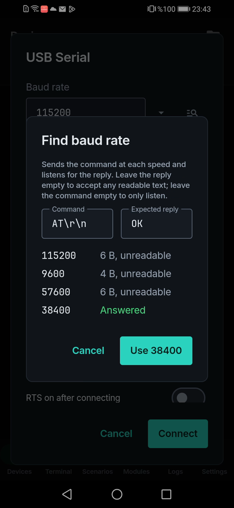

Unlesbare serielle Ausgabe? Finde die Baudrate mit dem Handy
Wenn lesbarer Text zu Zeichensalat wird, sind sich meist beide Seiten über die Baudrate uneinig. Du kannst die Geschwindigkeiten einzeln ausprobieren oder das dem Terminal überlassen.
Das ist eine echte Sitzung: ein ESP-01S mit 38400 Baud, per USB-OTG und USB-UART-Adapter an ein Android-Handy angeschlossen.
So sieht eine falsche Geschwindigkeit aus
Bei 115200 Baud antwortete das Modul auf AT mit drei unlesbaren Bytes:
23:42:31.865 TX AT
23:42:31.890 RX <0xE0><0xFC><0xFC>Lass LinkJig suchen
- Schließe den Adapter an und öffne den Verbindungsdialog deines seriellen Geräts.
- Tippe auf das Suchsymbol neben Baudrate.
- Lass den Befehl
AT\r\nund die erwartete AntwortOKstehen und tippe auf Suchen. - Sobald eine Geschwindigkeit antwortet, tippe auf 38400 verwenden.

Die Suche hielt bei der Geschwindigkeit an, die geantwortet hat (die App im Bild ist auf Englisch):
115200 6 B, unreadable
9600 4 B, unreadable
57600 6 B, unreadable
38400 AnsweredPrüfe das Ergebnis, indem du bei dieser Geschwindigkeit Befehle sendest:
23:43:16.233 TX AT
23:43:16.354 RX AT
OKSo funktioniert es
- Es probiert 18 Standardgeschwindigkeiten, die häufigsten zuerst.
- Es sendet den Befehl pro Geschwindigkeit bis zu zweimal, weil manche Module die Antwort auf den ersten verschlucken, und hört 300 ms lang zu.
- Dein Gerät spricht vielleicht kein AT. Lass die Antwort leer, um jeden lesbaren Text zu akzeptieren, oder den Befehl leer, um nur zuzuhören.
Grenzen
- Das Gerät muss auf den Befehl antworten oder lesbaren Text ausgeben.
- Geschwindigkeiten außerhalb der Standardliste werden nicht probiert.
- Live getestet mit einem CH340-Adapter unter Android 9. FTDI, CP210x und PL2303 unterstützt der Treiber, sie wurden aber noch nicht vor der Kamera getestet.
Probier es aus
Sieh dir die Demo auf YouTube an. LinkJig gibt es bei Google Play und im Microsoft Store.